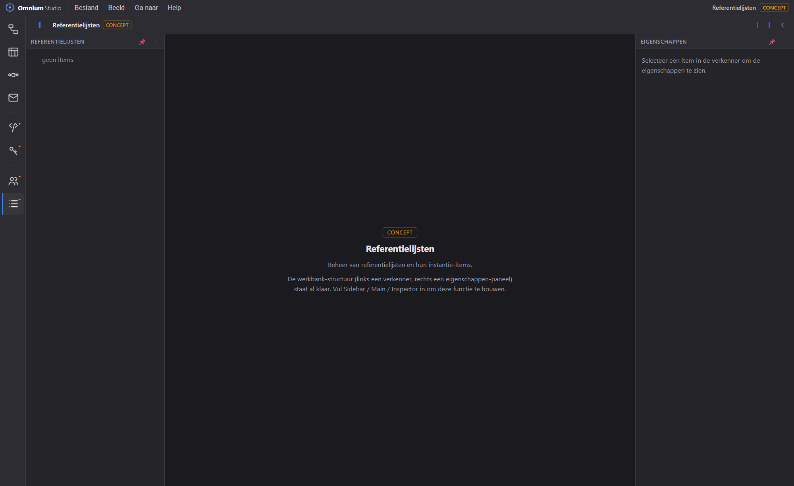

Beheer referentielijsten centraal en bitemporeel, consistent over alle domeinen heen. De referentielijst-structuur leeft al in het canonieke model; data-invoer gebeurt schema-gedreven via de Inhoud Editor. De ambitie: niet alleen referentielijsten, maar de volledige basis-configuratiedata.

Referentielijsten worden net als alle andere gegevens gemodelleerd én bevraagd, met automatische aansluiting op de rest van het model.
Referentielijst, referentielijst-items en -waarden staan als entiteiten in het UML-model (zie np-loc).
De Inhoud Editor toont automatisch elk type uit de MetaRegistry — nieuwe lijsten verschijnen zonder codewijziging, gegroepeerd per domein.
Waarden krijgen formele én materiële tijd, dus je ziet niet alleen wat geldt, maar ook wanneer het is vastgelegd.
Referentielijst-items zijn bruikbaar als veldtype in UML en als keuzeset in DMN en berichten.
Basisgegevens vormen het fundament waar de andere domeinen op leunen:
Bekijk de referentielijst-structuur in het np-loc-model en de concept-activiteit.
Open Omnium Studio →